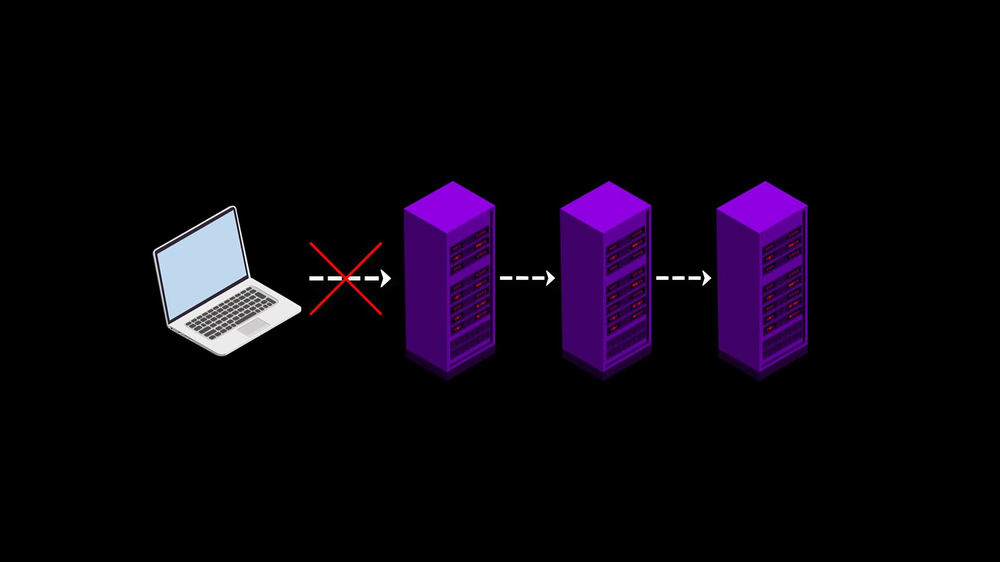
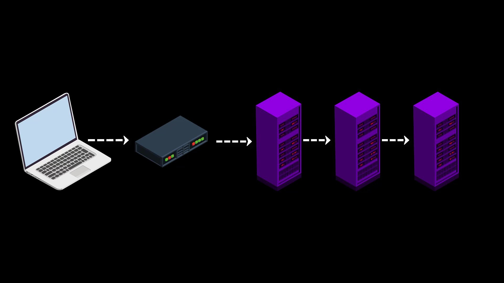

Fundamental Weakness - 1
First of all, since the list of node servers you can connect to through Tor is published publicly, any authority(government, internet service provider, network administrator, etc. etcetera) can easily restrict your access to the Tor network by blocking each of these servers.

As a solution to this situation, Tor provides bridge connections. With the bridge connection provided to you before accessing the Tor network, you can bypass existing restricts and gain unlimited access to the Tor network.

Moreover, since all these bridge addresses are kept confidential, it is prevented from blocking all of them in possible situations.But, if it TOR can keep bridge connections private, why doesn't it keep the list of node servers private?
Essentially, there is no point in trying to keep the server information private. Because anyone who owns one of the volunteer servers can obtain and publish the list by running a client. Since all servers are located on the common Tor circuit, it is not difficult for any server to reach the list of other servers. In other words, due to the working structure of the Tor network, it is very easy to get information about which servers on the network are active and which servers are inactive. So keeping the server list private is pointless.